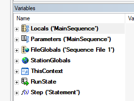
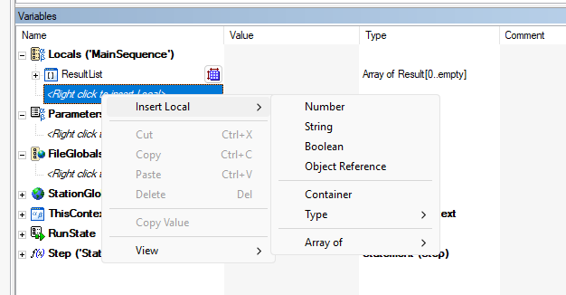
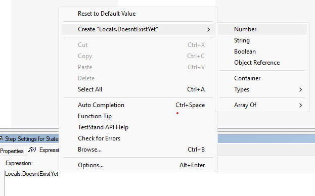
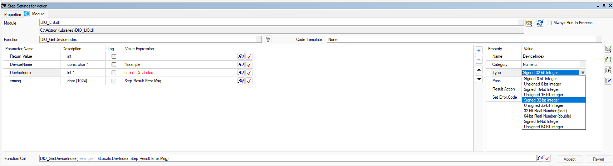

- Generated by
 1.16.1
1.16.1
|
TestStand Crash Course
|
Variables in TestStand work similarly to variables in most programming languages. The following section will detail how they work.
From smallest to largest:
Note: ThisContext and RunState are typically only used when working with the API. However, feel free to familiarize yourself with them.

To create a variable, right click under the desired scope in the Variables Pane. Then select the desired type from the resulting dropdown.

There is another useful way to create variables: type the desired variable name into any expression box, right click the variable name, and select Create "variable name" > Desired variable type.

It is very important that all variables being passed between TestStand and external C code have the appropriate type. To check how variables are being passed into a step, select the step in the Steps Pane, which will open the Step Settings Pane. Then, select a parameter to view its properties on the right side of the pane.

In this case, it would be important to ensure that DIO_GetDeviceIndex() from DIO_LIB.dll is supposed to take a pointer to a signed 32-bit integer for the parameter DeviceIndex.